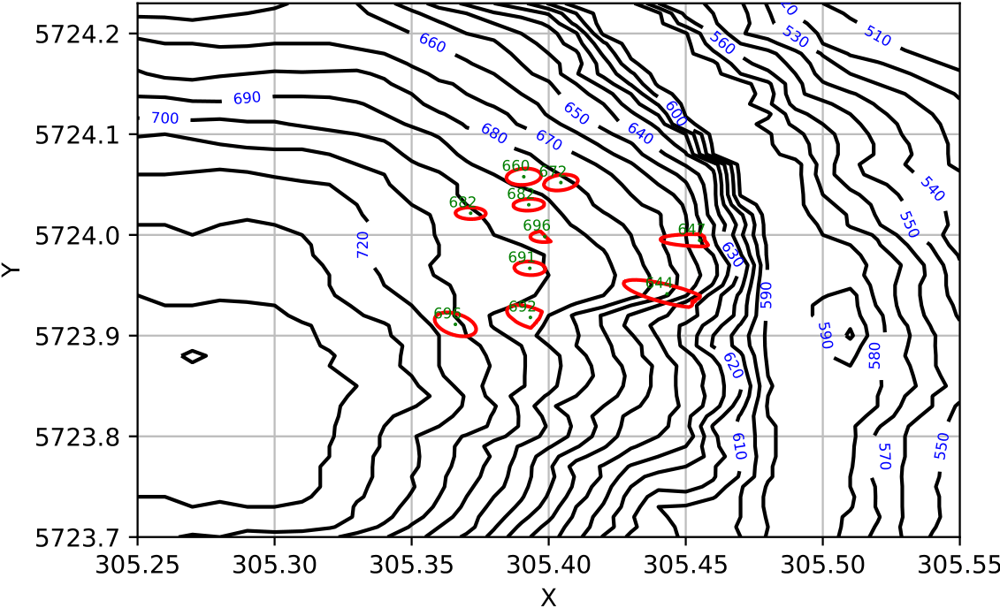
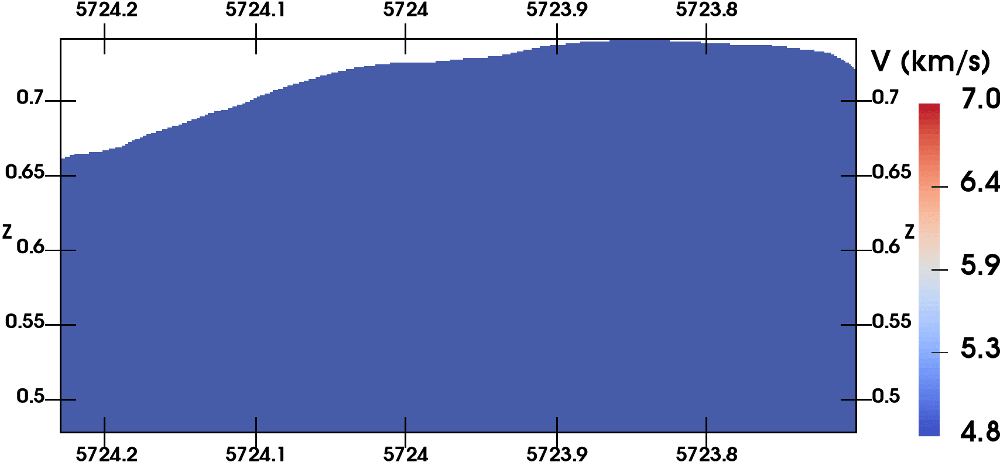
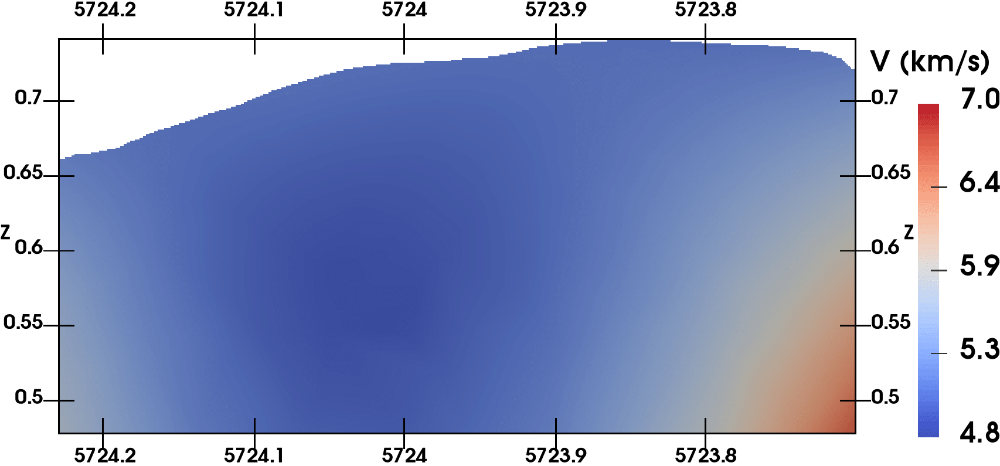
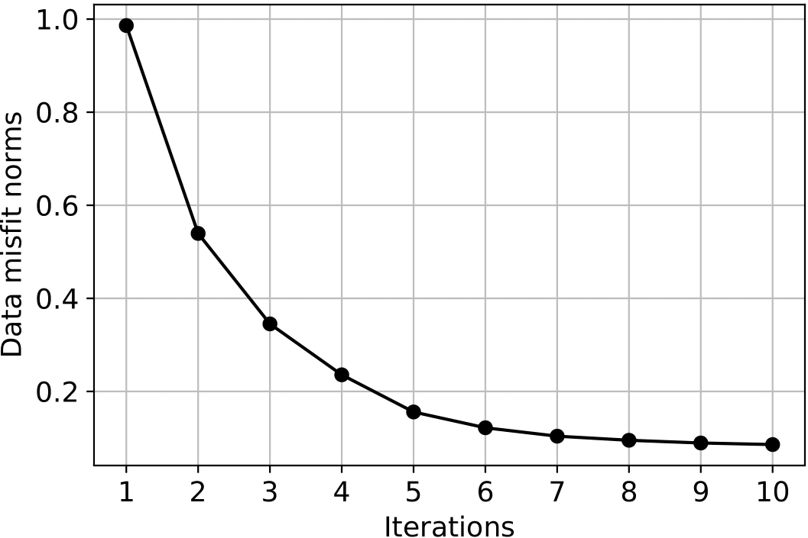

Results
If no bugs occur, JHVIT will return a python dictionary containing an estimation of:
- Hypocenter coordinates and their origin times.
- Static correction values at the stations.
- Velocity models for P-wave and eventually S-wave or the Vp/Vs ratio model.
- Convergence states of each hypocenter.
- Parameter uncertainty: this includes the origin time uncertainty and the confidence ellipsoid of each seismic event.
- Data misfit norms.
Examples of expected results are presented below. These results can be reproduced by running the test code: https://github.com/groupeLIAMG/JHVIT/blob/main/examples/Example.py
{kind=link}
Location of a set of 10 seismic events plotted on topographic map. Green dots are the estimated geographic position of the hypocenters. The red outlines give the projections of the confidence ellipsoids on the horizontal plane. The Z-component of each hypocenter is specified nearby.
 {kind=link}
{kind=link}
Comparison between the true velocity model and the model obtained by inversion for a synthetic seismic dataset with 5% of gaussian noise. Leftmost figure: true model. Rightmost: inverted model.
{kind=link}
Evolution of the data misfit norms as a function of iterations.
Noise effects
A test involving 3 datasets with 3 noise levels (3%, 5% and 10%) and two different models (homogeneous and layered) was performed to assess the JHVIT robustness.
For the hypocenter coordinates, obtained relative errors vary between 2.5% to 12% of the average distance sources-receivers while the origin time errors between
3% and 16%. In general, we noted lower errors for the homogenous model.
Note also that velocity models are less sensitive to noise than the hypocenter parameters. This may be explained by the implemented Tikhonov constraint that acts as a
filter by cutting off the contribution of the small eigenvalues of the Jacobian matrix.
{kind=link}
Relative errors of hypocenter positions and origin times versus noise percentage. Red and blue boxplots refer respectively to the errors calculated for the homogeneous and layered model.